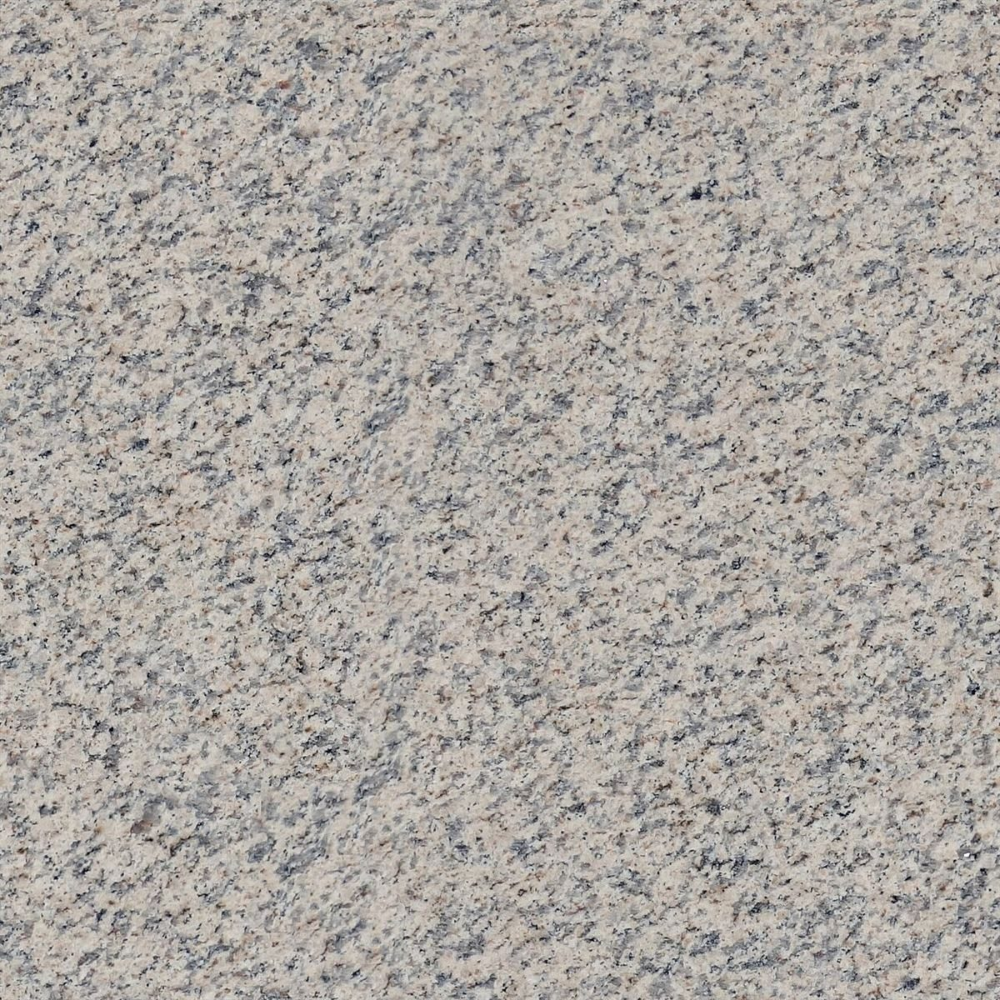

s
店のこと
店のこと
お店について確認できているのは、所在地とInstagramのアカウントだけです。
このページの「想像してみる」部分は、制作側が想像して書いたものです。お店の実際の様子・考え・メニューとは関係がありません。
確認できていること
- 店名は「sora」、業種はカフェ
- 所在地は長野県飯田市八幡町2151-11(〒395-0814)
- 電話番号はなし。連絡はInstagramから
- 営業時間・定休日・メニュー・価格・ご予約・駐車場は準備中
 準備中s
準備中s想像してみる
四文字の並びから
由来は分かりません。制作側は、アルファベット四文字が並んだ屋号を見て、小さな四角を並べて遊ぶようなページを想像しました。お店の姿を表すものではありません。
 準備中s
準備中s
準備中s上の2枚は、布と石の質感を切手の絵柄に見立てたイメージ写真です。